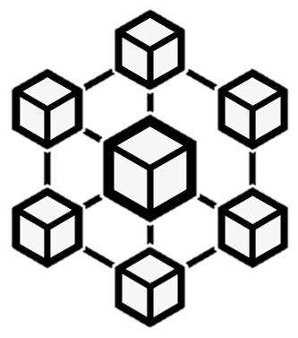

The project, formally called ‘Ground Person Location and Identification System’, aims to develop a Proximity Warning System (PWS) using Bluetooth Low energy (BLE) technology in work contexts where mobile machinery and workers on the ground are present. The system is capable of detecting proximity situations between these in real time, notifying the subjects concerned in the event of danger. In addition, it supports other types of alarms such as general communications and signalling of drivers away from machinery. Furthermore, the system offers functionalities for the management of site resources, allows the definition of a daily configuration of active machines with their authorised drivers, and guarantees secure access to the system. Thanks to the software and hardware solutions adopted, it is easily extendable and adaptable to specific needs.
Local Server with Microservices
The core of this architecture that contains a backend and a message broker to manage MQTT communications. The server implements: authentication of actors, management of site resources and daily configuration and historicisation of generated alarms.
Machinery Controller Board
An electronic board located on board the machinery, which acts as a central hub. It plays an active role in alarm processing, as it converts and forwards messages received on the MQTT topic of the machinery, notifying the smartphone of the BLE-connected driver. Additional devices can be connected.
App for Workers
For ground workers, the app scans surrounding beacons, calculates the distance and generates alarms. For driving operators, there is a connection interface with the control unit and a dashboard for alarms. It also notifying excessive distances from the machine.
Intuitive Dashboard
A web application provides the security manager with a real-time view of the alarms generated via a dashboard and screens for the configuration and management of the entire site.